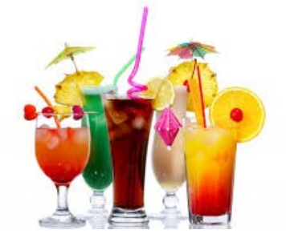

index<--
Bebe = Drinks

Challenge 1:
Translate:- When is the time for a drink?
- Whenever you are thirsty!
- ut = when
- beba = drink
- oc ut = whenever
- siro = thirsty
- tepa = time
- Ut sonu la tepa fo una beba?
- Oc ut tu sonu siro!
Challenge 2:
Translate:- What can a man drink at a party?
- Usually I drink a beer but sometimes wine!
- ke posu = what can
- un xoma = a man
- sh bebu = to drink
- at una feta = at a party
- bo algo-tepa = but sometimes
- vino = wine
- Ke posu un xoma sh bebu at una feta?
- Iujo ea bebu una bera bo algo-tepa vino!
Challenge 3:
Translate:- How many beers can a man drink before he is drunk?
- Just a single beer of course!
- vi fil = how many
- ate = before
- ivro = drunk
- ena = a (one)
- solo = single
- zogo = for sure / of course
- Vi fil bere posu un xoma sh bebu ate sonu ivro?
- Djo ena solo bera bo zogo!
Challenge 4:
Translate:- What can a boy drink at his birthday party?
- We serve to our children only water, milk or natural juice!
- noi = we
- nose = ours
- gatsa = boy
- akva = water
- leca = milk
- nato = natural
- soka = juice
- kide = children
- djo = only
Note: In this example I have used pattern O-A to make a composite word: naco-feta = "birthday party" equivalent to expression: "feta de nacu". Both can be used having the same meaning.
Challenge 5:
Translate:- Who can drink alcoholic beverages?
- Only healthy adults, which have nothing better to do!
- ki = who
- buja = booz (drink)
- sano = healthy
- dute = adults
- xaru = to have
- vexa = nothing
- beta = better
- sh faru = to do
- Ki poso sh bebu buja?
- Djo dute sano, uk xaru nika beta sh faru!
Challenge 6:
Translate:- What is your favorite drink?
- The best drink is sparkling water!
- uk = which
- beta = best
- miro = mineral
- akva = water
- Uk sonu al ti fevo beba?
- Lo beta beba sonu miro-akva!
Challenge 7:
Translate:- Hello girl how are you?
- Do you have money?
- tcao = hello
- Tcika = girl
- faru = to do
- gete = money
- tenu = to hold
- Tcao Tcika ke faru? = Hello girl how are you?
- Bine, tenu gete? = Okay, do you have money?
- No lo tenu = I don't have.
- Poi, vale! = Then good bye!
Challenge 8:
Translate:- hey boy quit drinking;
- hey boys you must quit drinking;
- alo = hey
- gatsa = boy
- gatse = boys
- lasu = to leave
- ivru = drinking
- dovu = must
- alo gatsa lasu-te de ivru;
- alo gatse dovu sh vh lasu de ivru;
Read next: Index